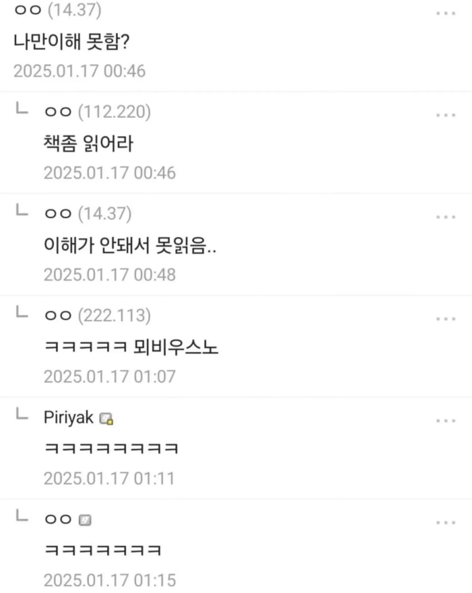

ㅋㅋㅋㅋㅋㅋㅋㅋㅋ

ㅋㅋㅋㅋㅋㅋㅋㅋㅋ
야 너어는 진짜 ㅋㅋㅋ

개웃기네 진짜 ㅋㅋ


디씨 중붕이들이 저런 땨땨이.. 우우 말투라 바부바부같으면서 좀 귀엽더라 ㅋㅋ
죽우 개븽 제발 죽우
중갤 헤헤쟝이 유행시킨 말투인데 블붕이나 원붕이들이 뺏어간거우
완장 미치는 게 존나 웃겼는데 ㅋㅋㅋㅋ
난 친구가 저래서 저지랄할때마다 얼굴생각나고 좆같아서 쌍욕박고 무시함
그이후로 저말투 싫더라...
저런 말투로 온갖 표독한 짓은 다해서 괴리감이 심하던데
뇌비우스의 책
뇌비었어
ㅋㅋㅋㅋㅋ만담 재밌네
우우... 죽여벌랑...
쉽지 않음 ㅋㅋㅋㅋㅋㅋ
초등학생용부터 시작해야지 뭐..
읽어질때까지 존나 읽는수밖에
어학은 양이고 국어도 예외는 아니다
나도 1차적으로는 그렇게 생각했다만, 과연 나아질 노력이라도 하는 사람들일까 싶다.
그래도 해야함 읽으려면
그래서 학년별 추천도서가 있는거
여러분들을 위한 단편 소설이란게 있습니다!
진짜 헛웃음 나오네ㅋㅋㅋㅋ
뇌비어스 ㅋㅋ